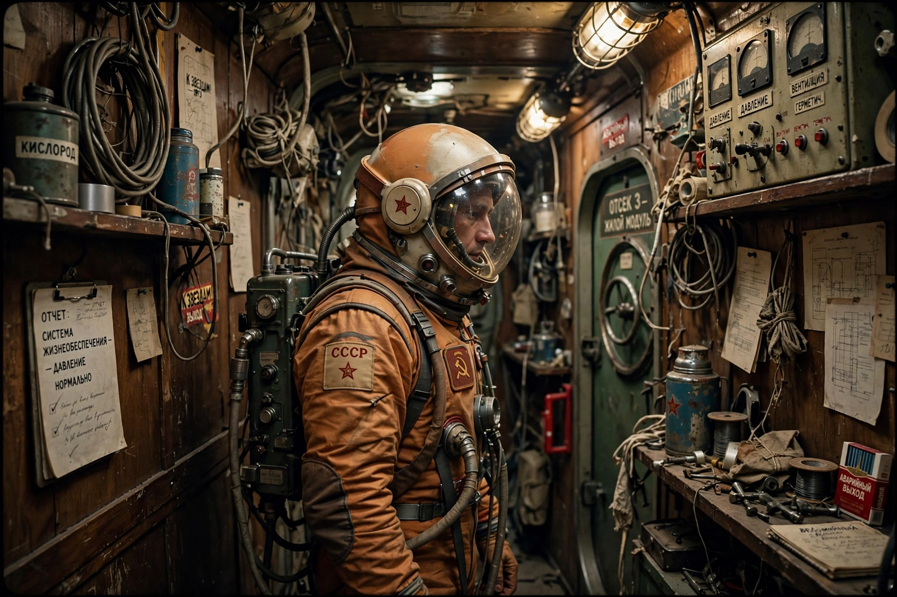

Wikipedia — The Free Encyclopedia

Solaris (Russian: Solyaris) is a 1972 Soviet science fiction film directed by Andrei Tarkovsky, based on Stanisław Lem's 1961 novel of the same name. The film stars Donatas Banionis as the psychologist Kris Kelvin, sent to a space station orbiting the planet Solaris, whose ocean appears to materialise the crew's memories and desires. It won the Grand Prix Spécial du Jury at the 1972 Cannes Film Festival and is regarded as one of the greatest science fiction films ever made.
Kelvin travels to the decaying station to investigate reports of strange phenomena. There he finds one crewman dead and the others evasive; soon his own wife Hari, who had killed herself years earlier, appears aboard, apparently solid and unaware she is a copy — a "guest" conjured by the Solaris ocean from his memory. As Kelvin's attachment to the simulacrum deepens, the scientists debate whether to bombard the ocean with radiation. Hari, realising what she is, attempts annihilation; a second copy returns. The film closes ambiguously, with Kelvin kneeling before his father at a house on an island in the Solaris ocean.
Tarkovsky used the science fiction premise to explore memory, guilt, love and the limits of human knowledge, contrasting the station's cluttered humanity with the alien ocean's indifference. Lem disliked the adaptation's emphasis on Earth and family drama over his novel's theme of failed contact. Steven Soderbergh directed an American remake in 2002 starring George Clooney.